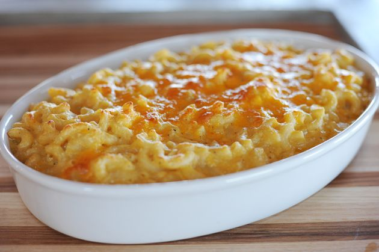

Mac and Cheese Recipe

Baked Mac and Cheese
The best Mac and Cheese I've ever had with a stunning white creamy cheese
sauce and a buttery breadcrumb topping.
Easy to make in your Ninja Foodi with lots leftover for lunch the next day!
Ingredients
- 1 tablespoon baking soda
- 1 tablespoon ground black pepper
- 1/2 cup lemon juice
- 1 tablespoon onion powder
- 5 cups water
- 1 tablespoon garlic powder
- 1 box (16 ounces) dry elbow pasta
- 1 teaspoon mustard powder
- 1 cup heavy cream
- 2 cups panko or Italian bread crumbs
- 1 bag (16 ounces) shredded cheese
- 1 stick (1/2 cup) butter, melted
- 2 tablespoons kosher salt
Method
- Place baking soda and lemon juice into the pot.
Stir until dissolved and bubbling has stopped.
Add the water and dry pasta, stirring to incorporate.
- Assemble pressure lid, making sure the pressure release valve is in the SEAL position.
Select PRESSURE and set to low (LO).
Set time to 0 minutes (the time the unit takes to pressurize is long enough to cook the pasta).
Select START/STOP to begin.
- When pressure cooking is complete, allow pressure to natural release for 10 minutes.
After 10 minutes, quick release remaining pressure by moving the pressure release valve to the VENT position.
Carefully remove lid when unit has finished releasing pressure.
- Add remaining ingredients, except bread crumbs and butter, to the pot.
- Stir well to melt cheese and ensure all ingredients are combined.
- In a bowl, stir together the bread crumbs and melted butter. Cover pasta evenly with the mixture.
- Close the crisping lid. Select AIR CRISP, set the temperature to 360°F, and set the time to 7 minutes. Select START/STOP to begin.
- When cooking is complete, serve immediately.